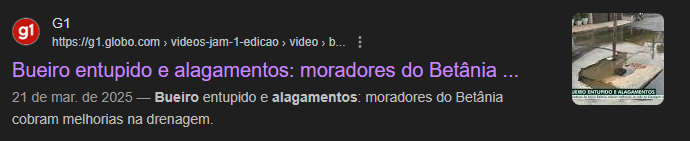

Quando chove forte, cada bueiro entupido vira um desafio para quem vive na cidade. A dona Ana, que mora na periferia, acorda preocupada: acabara entrando água suja pela porta, e ela terá que descalçar as crianças para atravessar a rua. O simples ato de ir para a padaria vira uma aventura molada e perigosa, com receio de escorregar ou de a água carregar lixo acumulado..
Na outra esquina, o Carlos, vendedor ambulante, vê seu carrinho ser inundado, perdendo o pão quentinho que prometia aos clientes do dia. O sustento dele depende de conseguir trabalhar, e cada chuva forte traz a angústia de perdas que não pode mais suportar. Já o Lucas, estudante, se atrasa para a aula, pois não há ônibus passando pela avenida alagada, ele fica com o uniforme encharcado e pensando se vai conseguir entregar o trabalho que passou horas revisando. Tudo isso poderia mudar se houvesse limpeza constante dos bueiros e conscientização no descarte de lixo. Quando jogamos sacolas plásticas e entulhos na rua, ajudamos a transformar o bueiro em uma barreira, provando que algo tão simples como cuidar do lugar onde moramos pode livrar muita gente de dias perdidos e sustos sem necessidade.